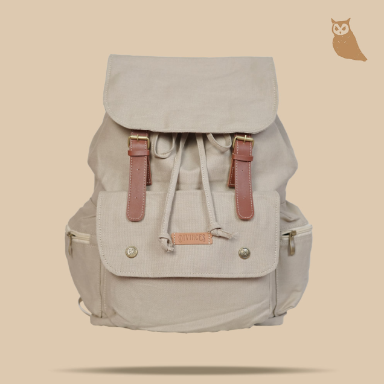

Divinces Backpack
Arin Series
Rp 225.000
Tas kanvas dari Divinces dengan model yang simple casual, dengan sentuhan vintage. Tas kokoh ini cocok digunakan untuk aktivitas harianmu, bisa digunakan juga untuk simple travelling. Di dalamnya terdapat pocket laptop 14" dan bonus raincover agar berjaga-jaga sedia raincover sebelum hujan.